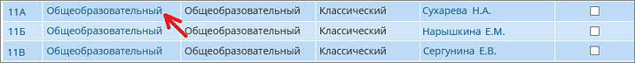
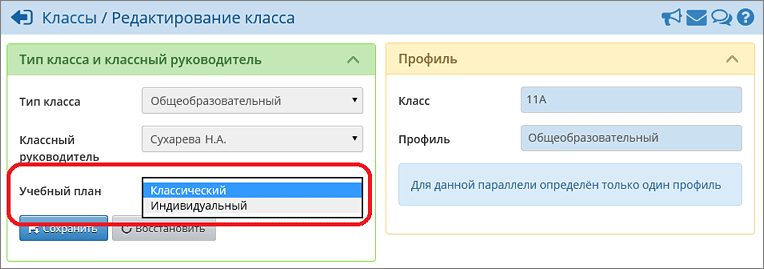

| 1) | перейти в экран Обучение -> Классы;
|
| 2) | в том классе, тип которого нужно поменять с «Классического» на «Индивидуальный», щёлкнуть ссылку в столбце «Профиль»:
|
 |
| и изменить учебный план «Классический» на «Индивидуальный»:
|
 |
Внимание! Если в школе идёт процесс перехода на новый учебный год и, соответственно, доступны для редактирования два года: текущий и «будущий», то изменения типа класса необходимо выполнить в «будущем» учебном году, а текущий год оставить без изменений.
Сменить тип учебного плана для класса: «Классический» на «Индивидуальный» - можно в любой момент времени, независимо от наличия учащихся в классе или от наличия данных об успеваемости. Однако, обратное изменение типа – с «Индивидуального» на «Классический» - возможно не всегда, а только до того момента, пока в класс не зачислены учащиеся. Поэтому при изменении данного поля система выдаст предупреждение: